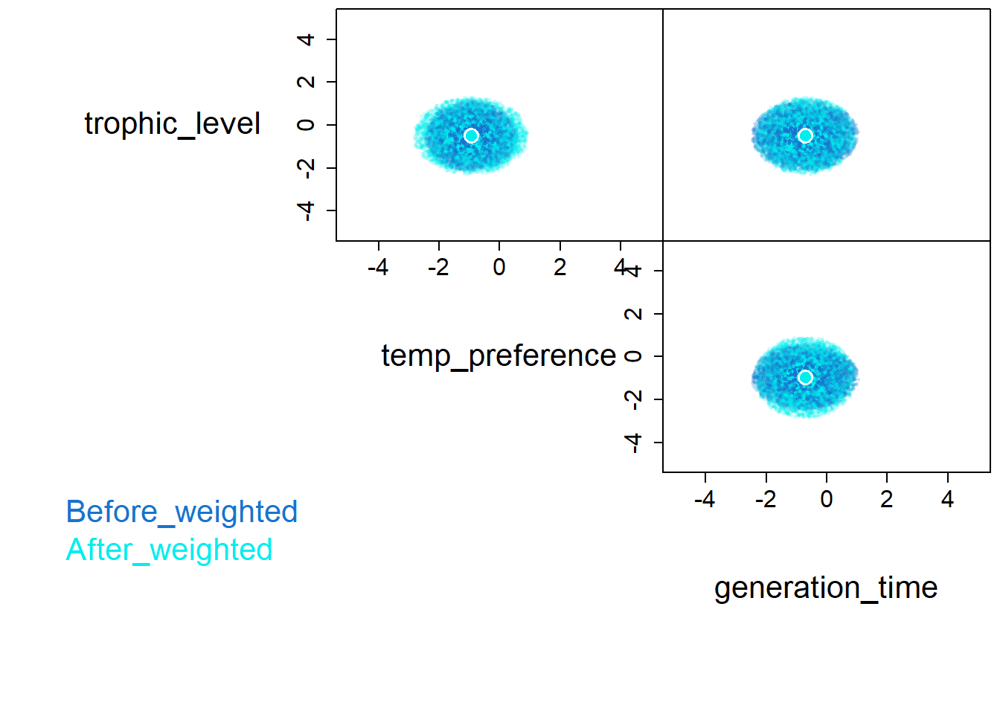
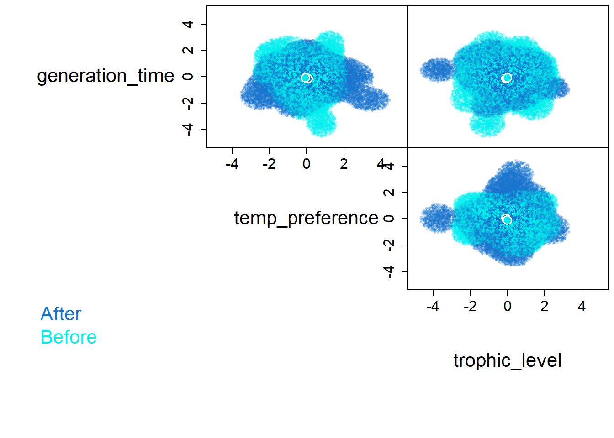

library(tidyverse)
# abundance data
ab = read_csv('data/abundHermine.csv')
## Rows: 68 Columns: 5
## ── Column specification ────────────────────────────────────────────────────────
## Delimiter: ","
## chr (4): site, species, hur, period
## dbl (1): abund
##
## ℹ Use `spec()` to retrieve the full column specification for this data.
## ℹ Specify the column types or set `show_col_types = FALSE` to quiet this message.
# trait data
tr = read_csv('data/fishTraits.csv')
## Rows: 46 Columns: 7
## ── Column specification ────────────────────────────────────────────────────────
## Delimiter: ","
## chr (4): species, project, Class, Order
## dbl (3): trophic_level, temp_preference, generation_time
##
## ℹ Use `spec()` to retrieve the full column specification for this data.
## ℹ Specify the column types or set `show_col_types = FALSE` to quiet this message.
# combine
df = left_join(ab, tr, by = 'species') |>
drop_na()Workshop 1: Introduction to hypervolumes
Getting to know the basics
This workshop discusses working with community trait data by introducing the hypervolume package by going over how to prepare the data and how to build hypervolumes in multiple ways.
R script: github
Hypervolumes
Hypervolumes are a multidimensional tool that is based on Hutchinson’s n-dimensional niche concept and we can build them with the hypervolume package.
Preparing the data
Typically we have a dataset that has the abundance of the community and another that has trait data. Therefore we need to combine them. Also, we can’t have NAs, so we have to filter any missing data one we combine the datasets.
Now we can make the hypervolume by selecting the data to be included and z-scoring
df_before = df |>
filter(period == 'Before') |>
select(trophic_level, temp_preference, generation_time)|>
mutate(across(trophic_level:generation_time, scale))
df_before
## # A tibble: 23 × 3
## trophic_level[,1] temp_preference[,1] generation_time[,1]
## <dbl> <dbl> <dbl>
## 1 -0.712 -0.569 -1.05
## 2 -1.00 -0.0696 -1.18
## 3 -0.567 -0.969 -0.769
## 4 0.947 1.43 1.32
## 5 -0.207 -0.0696 1.32
## 6 -0.640 2.23 -0.446
## 7 -0.640 0.530 0.920
## 8 0.298 -0.569 0.437
## 9 -0.712 -0.569 -1.05
## 10 -1.00 -0.0696 -1.18
## # ℹ 13 more rowsBuilding hypervolumes
With a nested dataset of our columns that we want to build hypervolumes for we can use mutate() and map() to generate the hypervolume.
library(hypervolume)
## Loading required package: Rcpp
hv_before = hypervolume_gaussian(df_before, name = 'Before',
samples.per.point = 1000,
kde.bandwidth = estimate_bandwidth(df_before),
sd.count = 3,
quantile.requested = 0.95,
quantile.requested.type = "probability",
chunk.size = 1000,
verbose = F)
## Note that the formula used for the Silverman estimator differs in version 3 compared to prior versions of this package.
## Use method='silverman-1d' to replicate prior behavior.
hv_before
## ***** Object of class Hypervolume *****
## Name: Before
## Method: Gaussian kernel density estimate
## Number of data points (after weighting): 23
## Dimensionality: 3
## Volume: 78.068034
## Random point density: 171.606729
## Number of random points: 13397
## Random point values:
## min: 0.000
## mean: 0.001
## median: 0.000
## max:0.003
## Parameters:
## kde.bandwidth: 0.6189038 0.6189038 0.6189038
## kde.method: silverman
## samples.per.point: 1000
## sd.count: 3
## quantile.requested: 0.95
## quantile.requested.type: probabilityThis can also be done to multiple at the same time with nest().
df = df |>
select(period, trophic_level, temp_preference, generation_time) |>
mutate(across(trophic_level:generation_time, scale)) |>
group_by(period) |>
nest()
df
## # A tibble: 2 × 2
## # Groups: period [2]
## period data
## <chr> <list>
## 1 Before <tibble [23 × 3]>
## 2 After <tibble [25 × 3]>
df = df |>
mutate(hv = map(data, \(data) hypervolume_gaussian(data, name = period,
samples.per.point = 1000,
kde.bandwidth = estimate_bandwidth(data),
sd.count = 3,
quantile.requested = 0.95,
quantile.requested.type = "probability",
chunk.size = 1000,
verbose = F)))
## Note that the formula used for the Silverman estimator differs in version 3 compared to prior versions of this package.
## Use method='silverman-1d' to replicate prior behavior.
## Note that the formula used for the Silverman estimator differs in version 3 compared to prior versions of this package.
## Use method='silverman-1d' to replicate prior behavior.
head(df)
## # A tibble: 2 × 3
## # Groups: period [2]
## period data hv
## <chr> <list> <list>
## 1 Before <tibble [23 × 3]> <Hypervlm>
## 2 After <tibble [25 × 3]> <Hypervlm>
df$hv
## [[1]]
## ***** Object of class Hypervolume *****
## Name: Before
## Method: Gaussian kernel density estimate
## Number of data points (after weighting): 23
## Dimensionality: 3
## Volume: 70.900748
## Random point density: 188.883762
## Number of random points: 13392
## Random point values:
## min: 0.000
## mean: 0.001
## median: 0.000
## max:0.004
## Parameters:
## kde.bandwidth: 0.5996196 0.5570341 0.6430513
## kde.method: silverman
## samples.per.point: 1000
## sd.count: 3
## quantile.requested: 0.95
## quantile.requested.type: probability
##
## [[2]]
## ***** Object of class Hypervolume *****
## Name: After
## Method: Gaussian kernel density estimate
## Number of data points (after weighting): 25
## Dimensionality: 3
## Volume: 90.256157
## Random point density: 160.354712
## Number of random points: 14473
## Random point values:
## min: 0.000
## mean: 0.000
## median: 0.000
## max:0.002
## Parameters:
## kde.bandwidth: 0.6391039 0.6706801 0.5990887
## kde.method: silverman
## samples.per.point: 1000
## sd.count: 3
## quantile.requested: 0.95
## quantile.requested.type: probabilityplotting hypervolumes
We can plot multiple hypervolumes by joining them together
hvj = hypervolume_join(df$hv[[1]], df$hv[[2]])
plot(hvj, pairplot = T, colors=c('dodgerblue3','cyan2'),
show.3d=FALSE,plot.3d.axes.id=NULL,
show.axes=TRUE, show.frame=TRUE,
show.random=T, show.density=TRUE,show.data=F,
show.legend=T, limits=c(-5,5),
show.contour=F, contour.lwd= 2,
contour.type='alphahull',
contour.alphahull.alpha=0.25,
contour.ball.radius.factor=1,
contour.kde.level=0.01,
contour.raster.resolution=100,
show.centroid=TRUE, cex.centroid=2,
point.alpha.min=0.2, point.dark.factor=0.5,
cex.random=0.5,cex.data=1,cex.axis=1.5,cex.names=2,cex.legend=2,
num.points.max.data = 100000, num.points.max.random = 200000, reshuffle=TRUE,
plot.function.additional=NULL,
verbose=FALSE
)
hypervolume metrics
The geometry of hypervolumes are useful when characterizing and comparing hypervolumes. Hypervolume size represents the variation of the data, centroid distance compares the euclidian distance between two hypervolume centroids (mean conditions), and overlap measures the simularity of hypervolumes.
# size
df = df |>
mutate(hv_size = map_dbl(hv, \(hv) get_volume(hv)))
head(df)
## # A tibble: 2 × 4
## # Groups: period [2]
## period data hv hv_size
## <chr> <list> <list> <dbl>
## 1 Before <tibble [23 × 3]> <Hypervlm> 70.9
## 2 After <tibble [25 × 3]> <Hypervlm> 90.3
# centroid distance
hypervolume_distance(df$hv[[1]], df$hv[[2]], type = 'centroid', check.memory=F)
## [1] 0.2435712
# overlap
hvset = hypervolume_set(df$hv[[1]], df$hv[[2]], check.memory = F)
## Choosing num.points.max=53958 (use a larger value for more accuracy.)
## Using minimum density of 160.354712
## Retaining 11369 points in hv1 and 14473 points in hv2.
## Beginning ball queries...
##
## Building tree...
## done.
## Ball query...
##
## done.
##
## Building tree...
## done.
## Ball query...
##
## done.
## Finished ball queries.
hypervolume_overlap_statistics(hvset)
## jaccard sorensen frac_unique_1 frac_unique_2
## 0.75154245 0.85814929 0.02471633 0.23386566Weight hypervolume input
The above hypervolume is just based on the traits using presence of species, but we can weight the points to shape the hypervolume based on abundance
#prep data
df_w = left_join(ab, tr, by = 'species') |>
drop_na() |>
select(period, abund, trophic_level, temp_preference, generation_time) |>
mutate(across(trophic_level:generation_time, scale)) |>
group_by(period) |>
nest(weight = abund, data = trophic_level:generation_time)
df_w
## # A tibble: 2 × 3
## # Groups: period [2]
## period weight data
## <chr> <list> <list>
## 1 Before <tibble [23 × 1]> <tibble [23 × 3]>
## 2 After <tibble [25 × 1]> <tibble [25 × 3]>
# make hypervolumes
df_w = df_w |>
mutate(hv = map2(data,weight, \(data,weight) hypervolume_gaussian(data, name = paste(period,'weighted',sep = '_'),
weight = weight$abund,
samples.per.point = 1000,
kde.bandwidth = estimate_bandwidth(data),
sd.count = 3,
quantile.requested = 0.95,
quantile.requested.type = "probability",
chunk.size = 1000,
verbose = F)),
hv_size = map_dbl(hv, \(hv) get_volume(hv)))
## Note that the formula used for the Silverman estimator differs in version 3 compared to prior versions of this package.
## Use method='silverman-1d' to replicate prior behavior.
## Note that the formula used for the Silverman estimator differs in version 3 compared to prior versions of this package.
## Use method='silverman-1d' to replicate prior behavior.
## Warning: There were 2 warnings in `mutate()`.
## The first warning was:
## ℹ In argument: `hv = map2(...)`.
## ℹ In group 1: `period = "After"`.
## Caused by warning in `hypervolume_gaussian()`:
## ! The sum of the weights must be equal to 1. Normalizing the weights.
## ℹ Run `dplyr::last_dplyr_warnings()` to see the 1 remaining warning.
df_w
## # A tibble: 2 × 5
## # Groups: period [2]
## period weight data hv hv_size
## <chr> <list> <list> <list> <dbl>
## 1 Before <tibble [23 × 1]> <tibble [23 × 3]> <Hypervlm> 19.0
## 2 After <tibble [25 × 1]> <tibble [25 × 3]> <Hypervlm> 24.4
hvj_w = hypervolume_join(df_w$hv[[1]], df_w$hv[[2]])
plot(hvj_w, pairplot = T, colors=c('dodgerblue3','cyan2'),
show.3d=FALSE,plot.3d.axes.id=NULL,
show.axes=TRUE, show.frame=TRUE,
show.random=T, show.density=TRUE,show.data=F,
show.legend=T, limits=c(-5,5),
show.contour=F, contour.lwd= 2,
contour.type='alphahull',
contour.alphahull.alpha=0.25,
contour.ball.radius.factor=1,
contour.kde.level=0.01,
contour.raster.resolution=100,
show.centroid=TRUE, cex.centroid=2,
point.alpha.min=0.2, point.dark.factor=0.5,
cex.random=0.5,cex.data=1,cex.axis=1.5,cex.names=2,cex.legend=2,
num.points.max.data = 100000, num.points.max.random = 200000, reshuffle=TRUE,
plot.function.additional=NULL,
verbose=FALSE
)
# centroid distance
hypervolume_distance(df_w$hv[[1]], df_w$hv[[2]], type = 'centroid', check.memory=F)
## [1] 0.01744452
# overlap
hvset_w = hypervolume_set(df_w$hv[[1]], df_w$hv[[2]], check.memory = F)
## Choosing num.points.max=53958 (use a larger value for more accuracy.)
## Using minimum density of 160.631671
## Retaining 3047 points in hv1 and 3921 points in hv2.
## Beginning ball queries...
##
## Building tree...
## done.
## Ball query...
##
## done.
##
## Building tree...
## done.
## Ball query...
##
## done.
## Finished ball queries.
hypervolume_overlap_statistics(hvset_w)
## jaccard sorensen frac_unique_1 frac_unique_2
## 0.74999133 0.85713720 0.02001969 0.23833902From mean and sd
Sometimes, we do not have enough points to meet assumptions to make a hypervolume. Therefore, we can simulate random points based on mean and sd of our axes. We can then simulate the information needed and make our hypervolumes.
# mean and sd
df_m = left_join(ab, tr, by = 'species') |>
drop_na() |>
pivot_longer(trophic_level:generation_time, names_to = 'trait', values_to = 'value') |>
group_by(period,trait) |>
summarize(mean = mean(value),
sd = sd(value))
## `summarise()` has grouped output by 'period'. You can override using the
## `.groups` argument.
df_m
## # A tibble: 6 × 4
## # Groups: period [2]
## period trait mean sd
## <chr> <chr> <dbl> <dbl>
## 1 After generation_time 3.10 1.79
## 2 After temp_preference 25.1 1.22
## 3 After trophic_level 3.52 0.150
## 4 Before generation_time 3.35 1.90
## 5 Before temp_preference 25.0 1.00
## 6 Before trophic_level 3.54 0.139
#generate points
# number of points
n = 50
df_tot = df_m |> slice(rep(1:n(), each=n))|>
mutate(point = map2_dbl(mean,sd, \(mean,sd) rnorm(1,mean =mean,sd =sd))) |>
group_by(period, trait) |>
mutate(num = row_number()) |>
ungroup() |>
select(-mean, -sd)|>
pivot_wider(names_from = trait, values_from = point)|>
select(-num) |>
mutate(across(generation_time:trophic_level,scale)) |>
group_by(period) |>
nest()
# generate hypervolumes
df_tot = df_tot |>
mutate(hv = map(data, \(data) hypervolume_gaussian(data, name = period,
samples.per.point = 1000,
kde.bandwidth = estimate_bandwidth(data),
sd.count = 3,
quantile.requested = 0.95,
quantile.requested.type = "probability",
chunk.size = 1000,
verbose = F)),
hv_size = map_dbl(hv, \(hv) get_volume(hv)))
## Note that the formula used for the Silverman estimator differs in version 3 compared to prior versions of this package.
## Use method='silverman-1d' to replicate prior behavior.
## Note that the formula used for the Silverman estimator differs in version 3 compared to prior versions of this package.
## Use method='silverman-1d' to replicate prior behavior.
#plot
hvj_tot = hypervolume_join(df_tot$hv[[1]], df_tot$hv[[2]])
plot(hvj_tot, pairplot = T, colors=c('dodgerblue3','cyan2'),
show.3d=FALSE,plot.3d.axes.id=NULL,
show.axes=TRUE, show.frame=TRUE,
show.random=T, show.density=TRUE,show.data=F,
show.legend=T, limits=c(-5,5),
show.contour=F, contour.lwd= 2,
contour.type='alphahull',
contour.alphahull.alpha=0.25,
contour.ball.radius.factor=1,
contour.kde.level=0.01,
contour.raster.resolution=100,
show.centroid=TRUE, cex.centroid=2,
point.alpha.min=0.2, point.dark.factor=0.5,
cex.random=0.5,cex.data=1,cex.axis=1.5,cex.names=2,cex.legend=2,
num.points.max.data = 100000, num.points.max.random = 200000, reshuffle=TRUE,
plot.function.additional=NULL,
verbose=FALSE
)
# centroid distance
hypervolume_distance(df_tot$hv[[1]], df_tot$hv[[2]], type = 'centroid', check.memory=F)
## [1] 0.173522
# overlap
hvset_tot = hypervolume_set(df_tot$hv[[1]], df_tot$hv[[2]], check.memory = F)
## Choosing num.points.max=53958 (use a larger value for more accuracy.)
## Using minimum density of 251.407651
## Retaining 25684 points in hv1 and 24089 points in hv2.
## Beginning ball queries...
##
## Building tree...
## done.
## Ball query...
##
## done.
##
## Building tree...
## done.
## Ball query...
##
## done.
## Finished ball queries.
hypervolume_overlap_statistics(hvset_tot)
## jaccard sorensen frac_unique_1 frac_unique_2
## 0.5654774 0.7224345 0.2999922 0.2536543